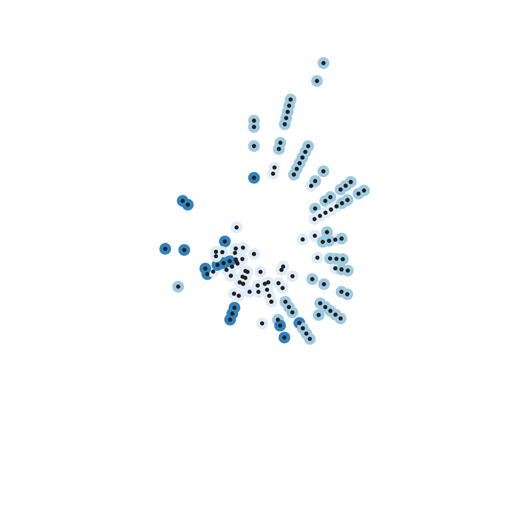
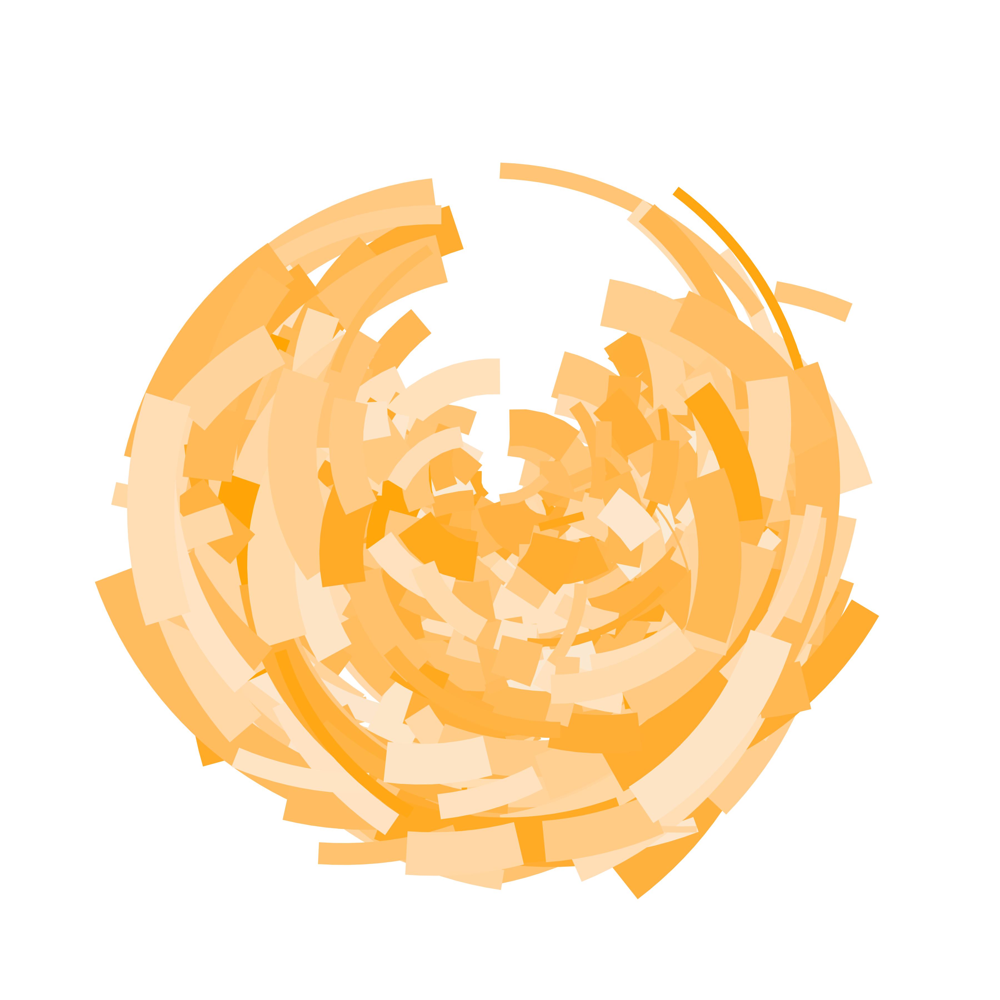
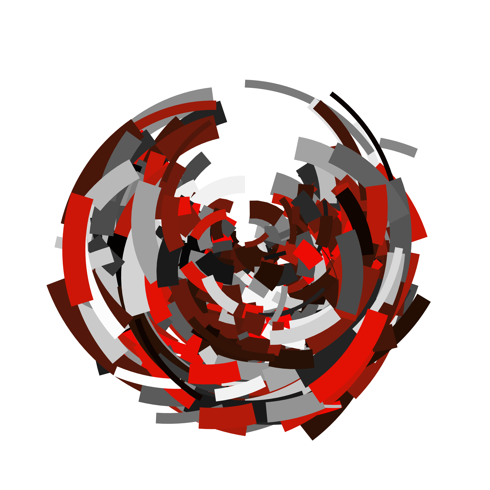
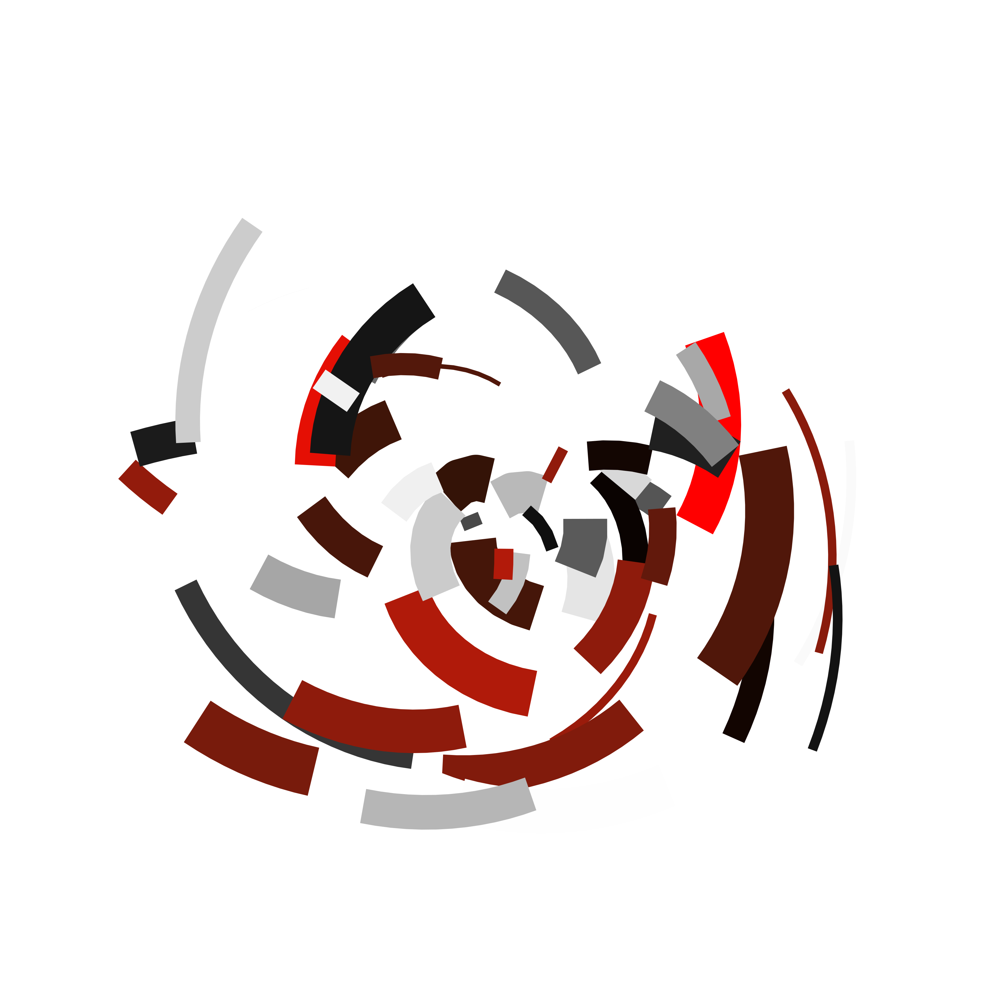
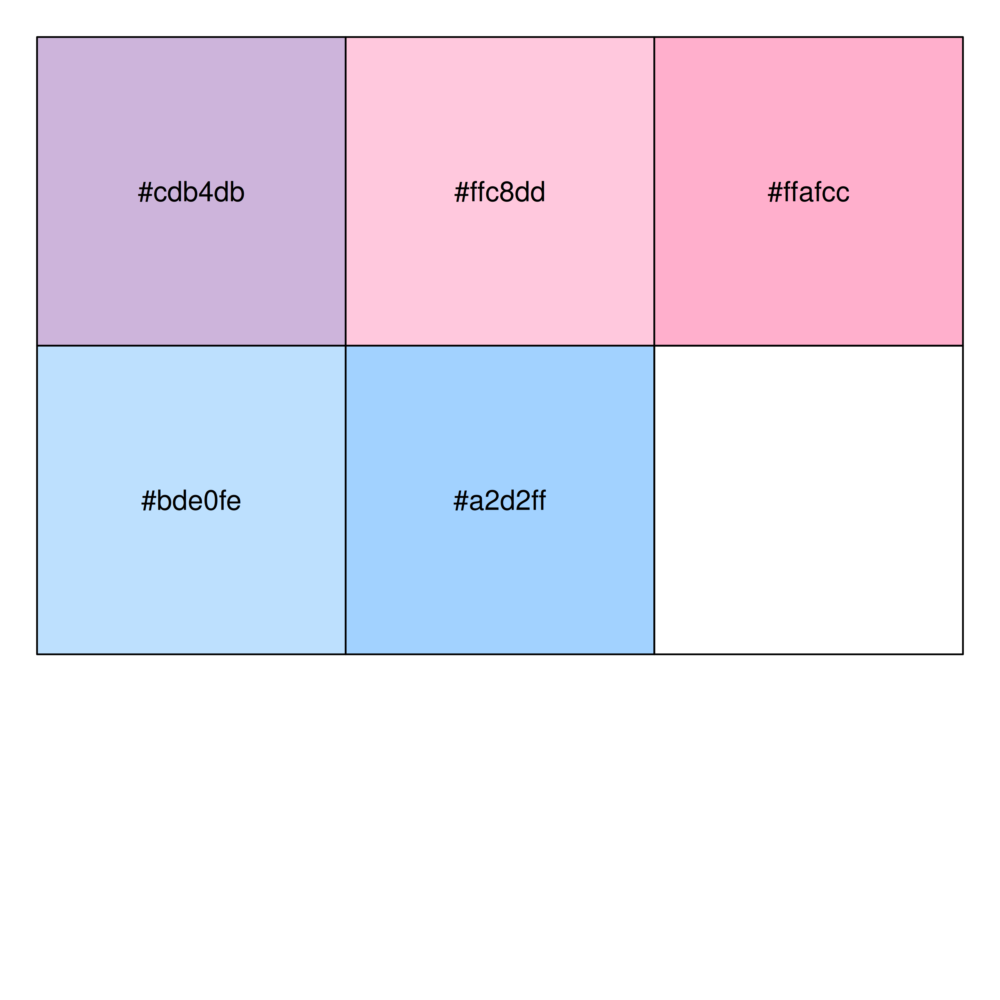
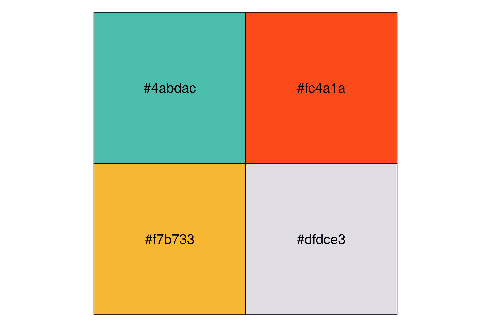
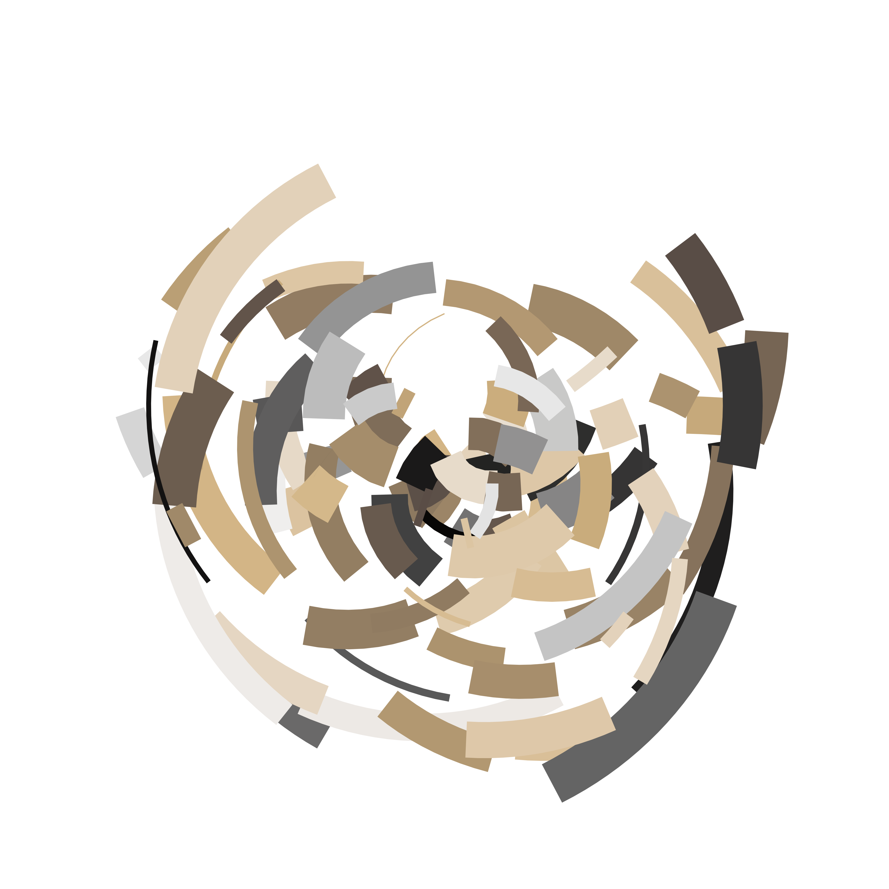
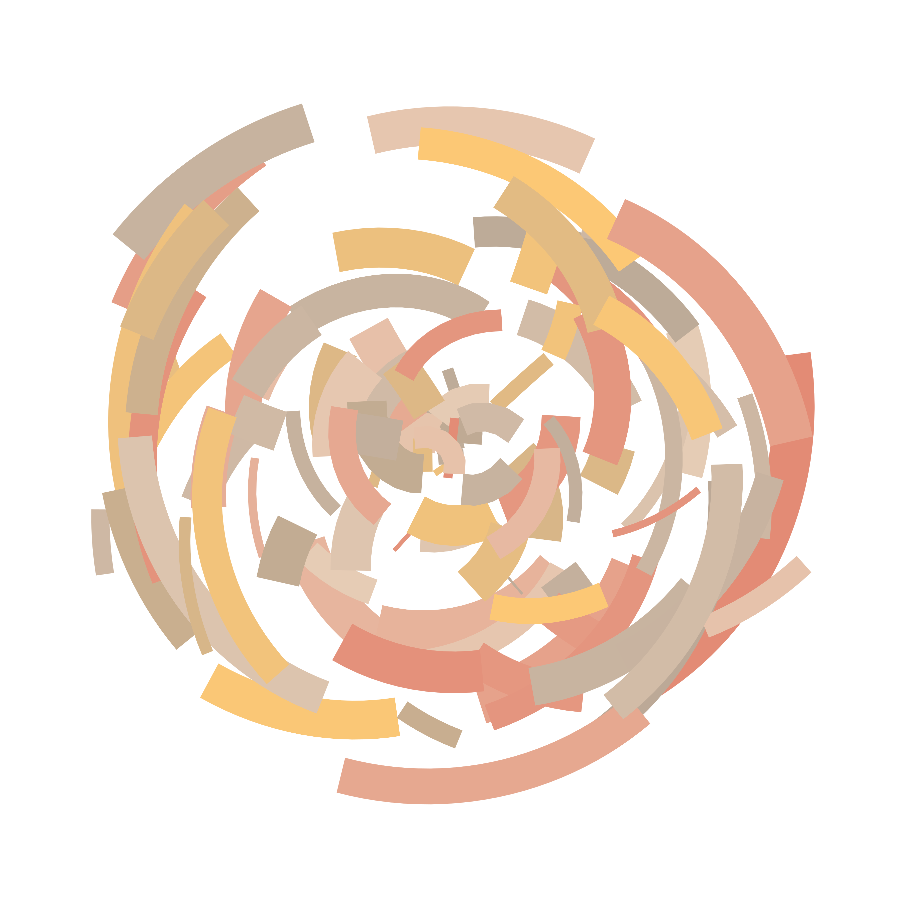
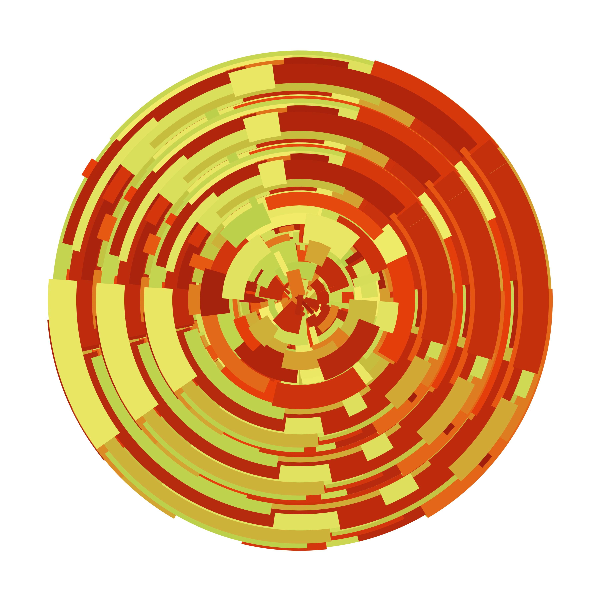

![]()
library(ggplot2)
library(tibble)A couple of years ago I gave an invited workshop called art from code at the 2022 rstudio::conf (now posit::conf) conference. As part of the workshop I wrote a lengthy series of notes on how to make generative art using R, all of which were released under a CC-BY licence. For a while now I’d been thinking I should do something with these notes. I considered writing a book, but in all honesty I don’t have the spare capacity for a side-project of that scale these days. I can barely keep up with the workload at my day job as it is. So instead, I’ve decided that I’d port them over to this site as a series of blog posts. In doing so I’ve made a deliberate decision not to modify the original content too much (nobody loves it when an artist tries to “improve” the original, after all). All I’ve done is update the code to accommodate package changes since 2022, and some minor edits so that the images are legible when embedded in this blog (which is light-themed, and the original was dark-theme). Other than that, I’ve left it alone. This is the first post in that series.
- Prelude
- Spatial tricks with ambient
- Polygon tricks
- Shading tricks
- Iterated function systems
- Tiles and tessellations
- Pixel filters
Introduction
Once upon a time I was a professor.
It’s a dull story, and I won’t bore you with the details, but I mention it because at the start of almost every class I taught I’d have to go being by explaining the terminology. Want to teach a class on human learning? You better start out by saying what you think “learning” means. Want to teach people about computational models of cognition? The students would like you to start by giving a working definition of “computation”, “model” and “cognition”. It doesn’t really matter if the definitions aren’t good definitions (spoiler: they’re always terrible), but it helps people to start out from something that looks vaguely like stable ground to stand on.
So. If this is going to be a workshop on generative art in R, I should say something about what I mean by “R”, “art”, and “generative”. Of the three terms, R is the easiest one to define: it’s a programming language used primarily for statistical computing and data science. To anyone starting this workshop I don’t really have to give a lot more detail than that. We all know (roughly speaking) what R is: we wouldn’t be participating at rstudio::conf if we didn’t! For the current purposes all I’ll say is that I’m talking about R the way it is typically used in 2022: R doesn’t just mean “base R”. It also includes “tidyverse”. It includes the sprawling ecosystem of packages on CRAN and GitHub. Often that includes code written in other languages: thanks to packages like Rcpp and cpp11 it’s not at all unusual for computationally intensive subroutines to be farmed out to C++ code, and not written in “pure” R. Supplying bindings to libraries written in other languages is a well-established tradition in R: in this workshop we shall not be purists. If we can do a thing by working with R code, then we’re doing something with R even if other languages are doing some of the work for us.
Okay, so that’s “R”. What about “art” – what counts as “art”? In this essay I will…
…just kidding. I do not have the arrogance to pretend that I know what art is. Art is pretty (except when it isn’t). Art is created (except when it is found). Art is intentional (except when it is accidental). Art makes you think (sometimes, not always). Art relies on artist skill (except when you send GPT-3 generated text to DALL-E). Art is uniquely human (no it isn’t). Art… yeah, look, I have no idea what art is. Personally, I like to make pretty things from code that appeal to my aesthetic sensibilities, and that’s good enough for me.
Which brings me to the third word: “generative”. When we talk about “generative art”, what do we mean? The term isn’t particularly well defined, but what we typically (not always) mean is that generative art is computational artwork that incorporates some source of noise, disorder, or randomness (natural or artificial) into the artistic process itself. It’s a kind of perverse artistry: almost always we’re working with computers, one of the most precise and flexible tools that humans have devised, and yet we are deliberately making the products of the machine unpredictable, unknowable even to the artist.
We are writing code that makes unpredictable paintings.
Art is theft
Okay that’s quite enough preamble. Let’s stop talking and start making some art! Following the oft-repeated dictum that “art is theft” I want to begin with an act of wholesale thievery. I am going to co-opt tools that were created for serious data science purposes and repurpose them for art. If you’re in this room with me then you already know these tools by name: ggplot2 is an R package designed for data visualisation; dplyr is designed for data manipulation; tibble is designed for data representation. None of these packages were created for artists. They’re practical tools designed for statisticians, data scientists, analysts, and other knowledge workers.
Fuck it. Let’s steal them. Sorry Hadley.
Let’s start with a data visualisation exercise that most R users have encountered at one time or another: creating a scatterplot. The ggplot2 package supplies the tediously-overused mpg data set that… I don’t know, it has something to do with cars, I think? I don’t drive and I am trying very hard to pretend I never learned anything about the internal combustion engine. The point here is that we have a data set. From the perspective of the generative artist our main concern is that it’s a table that contains some numbers and text organised in a table:
mpg# A tibble: 234 × 11
manufacturer model displ year cyl trans drv cty hwy fl class
<chr> <chr> <dbl> <int> <int> <chr> <chr> <int> <int> <chr> <chr>
1 audi a4 1.8 1999 4 auto… f 18 29 p comp…
2 audi a4 1.8 1999 4 manu… f 21 29 p comp…
3 audi a4 2 2008 4 manu… f 20 31 p comp…
4 audi a4 2 2008 4 auto… f 21 30 p comp…
5 audi a4 2.8 1999 6 auto… f 16 26 p comp…
6 audi a4 2.8 1999 6 manu… f 18 26 p comp…
7 audi a4 3.1 2008 6 auto… f 18 27 p comp…
8 audi a4 qu… 1.8 1999 4 manu… 4 18 26 p comp…
9 audi a4 qu… 1.8 1999 4 auto… 4 16 25 p comp…
10 audi a4 qu… 2 2008 4 manu… 4 20 28 p comp…
# ℹ 224 more rowsWe need not concern ourselves with why displ refers to engine displacement nor what that term even means. Nor do we have to care about how hwy represents highway mileage or how drv has something to do with gears. Really, this is not our concern. As generative artists we think of these as raw sources of structure and randomness.
Here’s what I mean. As a data scientist, I might draw a plot like this:
mpg |>
ggplot(aes(displ, hwy, colour = drv)) +
geom_point()On the x-axis I’ve plotted one column in the table, on the y-axis I’ve plotted another column, and each row in the table shows up as a dot. A third row of the table is used to supply the colour. Because ggplot2 is designed to support interpretation, the resulting plot has a collection of guides, legends and other labels. In the world of data visualisation, these things are essential for helping the viewer understand how the picture relates to the thing in the world (cars, apparently) that the data pertains to.
As an artist, I cannot be bothered with such dull practicalities. Let’s get rid of all of them, and – violating all sorts of data visualisation best practices – I’m going to vary the size of the dots in a way that doesn’t help anyone make sense of the data:
mpg |>
ggplot(aes(displ, hwy, colour = drv, size = cyl)) +
geom_point(show.legend = FALSE) +
theme_void() +
scale_color_brewer()Once we strip away the practical purpose of the data visualisation, we’re left with something that isn’t quite so easy to interpret, but is… well, it’s kind of pretty, right? There’s an overall structure to the scatterplot. The colours, shapes, and positions of the data don’t necessarily tell an easily-understood story about the real world anymore but they’re quite pleasing to look at.
Viewing ggplot2 through this lens opens up a new world of possibilities. Inspired by Leland Wilkinson’s book on the subject, Hadley Wickham wrote the package to provide a grammar of graphics: it supplies a collection of transformation and composition rules that we can use to construct mappings between data (that represent a thing in the world) and images (that our visual systems can quickly interpret). Those rules are not arbitrary: they’re created to make our lives as data analysts easier. But we can repurpose them. The grammatical rules of human language did not evolve to serve the needs of poets, but the poets use them anyway. So too we as visual artists can (and will) reuse the grammar of graphics for artistic purposes. A few minor tweaks gives us this:
mpg |>
ggplot(aes(displ, hwy, colour = drv)) +
geom_point(show.legend = FALSE, size = 4) +
geom_point(show.legend = FALSE, size = 1, colour = "#222222") +
coord_polar() +
theme_void() +
scale_color_brewer()
And let’s be honest. At this point the image has very little to do with cars. Sure, I’m using the mpg data to drive the process, but as far as I’m concerned it’s really just a source of raw numbers. As a generative artist these numbers are my raw materials, but I’m not too fussed about exactly how I came into possession of these numbers.
I could just have easily created my own raw materials. As a statistical programming language R comes equipped with a very sophisticated collection of tools for generating pseudorandom numbers with various distributions. I can tap into this whenever I like but in a lot of cases I don’t need anything more fancy than the runif() function. Uniformly distributed random numbers are perfectly adequate for many purposes. Let’s make some:
set.seed(1)
n <- 50
dat <- tibble(
x0 = runif(n),
y0 = runif(n),
x1 = x0 + runif(n, min = -.2, max = .2),
y1 = y0 + runif(n, min = -.2, max = .2),
shade = runif(n),
width = runif(n)
)
dat# A tibble: 50 × 6
x0 y0 x1 y1 shade width
<dbl> <dbl> <dbl> <dbl> <dbl> <dbl>
1 0.266 0.478 0.327 0.523 0.268 0.762
2 0.372 0.861 0.313 0.884 0.219 0.933
3 0.573 0.438 0.481 0.370 0.517 0.471
4 0.908 0.245 1.11 0.226 0.269 0.604
5 0.202 0.0707 0.255 0.0709 0.181 0.485
6 0.898 0.0995 0.784 -0.0282 0.519 0.109
7 0.945 0.316 0.796 0.328 0.563 0.248
8 0.661 0.519 0.652 0.349 0.129 0.499
9 0.629 0.662 0.799 0.573 0.256 0.373
10 0.0618 0.407 0.101 0.292 0.718 0.935
# ℹ 40 more rowsYup. Those look like a bunch of numbers. They do not mean anything to me. They’re entirely deterministic – at least in the sense that the set.seed() command ensures that the pseudorandom number will always generate the same random numbers with this code – but the underlying generator is utterly without structure. As the outside observer I am entirely indifferent about whether I should use set.seed(1) or set.seed(234534). Both versions of this command will initialise the state of the random number generator in a way that ensures that runif() generates pure noise. Under the hood there are some fancy definitions of what we mean by “randomness” and “noise”, but this is not the place to talk about Martin-Löf randomness. For our purposes it is sufficient to agree that the output of a uniform random number generator is meaningless noise, no matter what seed value we supply.
The key point is this: the input is garbage. Garbage in…
dat |>
ggplot(aes(
x = x0,
y = y0,
xend = x1,
yend = y1,
colour = shade,
linewidth = width
)) +
geom_segment(show.legend = FALSE) +
coord_polar() +
scale_y_continuous(expand = c(0, 0)) +
scale_x_continuous(expand = c(0, 0)) +
scale_color_viridis_c() +
scale_linewidth(range = c(0, 10)) +
theme_void()…art out?
Not that anyone has ever asked my opinion on the topic, but this is what I think generative art really is. An automated process that takes garbage as input and creates unpredictably delightful outputs – sometimes with a little helpful human oversight and curation – is a generative art system. It is fundamentally a process of making something from nothing. Art from the void. Treasure from trash. Signal from noise. You get the idea.
Technique
At this point we have some sense of what our creative endeavour is all about, which leads naturally to questions about technique. One thing I’ve learned – about art, yes, but I think it holds quite generally – is that you can’t teach “personal style”. Everyone has their own tastes and preferences, and it makes no sense whatsoever to tell someone else who, what, or how they should love. I have no business telling you what is pleasing and what isn’t. I’m not arrogant enough to try.
What I can do, however, is talk about the tools and coding practices that have made it easier for me to create the things that I think have aesthetic value. When art schools talk about teaching “technique”, this is what I think they mean. The point isn’t to dictate what you create, but to give you skills that will let you make a reality from the thing you envision. Fundamentally, this is a workshop on technique, in this sense of the term.
Let’s start with a core principle: code reuse. The entire point of generative art is that we’re turning trash into treasure, and trash is not a scarce resource. If you can write code to create one beautiful thing, the same code should be reusable to create many beautiful things. This “reuse principle” means that the substantive work of writing generative art code is almost always a matter of writing functions. Functions are beautiful…
…but they are opinionated. A function exists if (and only if) you intend to reuse it. In the ideal case, a function is a thing that makes sense on its own terms and – as a consequence – you might reuse it in many different contexts. Every scientific programming language since the dawn of time has included functions like exp() and log() because scientists will always reuse these functions. Exponents and logarithms are scientifically-reusable concepts.
So what counts as an artistically-reusable concept? Well, at a minimum, the definition of an artistic system is a reusable concept. Suppose I want to create many art pieces that are “in the same style” as the piece I created above. To do that, I could wrap my code in a function that I’ll call polar_art():
polar_art <- function(seed, n, palette) {
# set the state of the random number generator
set.seed(seed)
# data frame containing random values for
# aesthetics we might want to use in the art
dat <- tibble(
x0 = runif(n),
y0 = runif(n),
x1 = x0 + runif(n, min = -.2, max = .2),
y1 = y0 + runif(n, min = -.2, max = .2),
shade = runif(n),
width = runif(n)
)
# plot segments in various colours, using
# polar coordinates and a gradient palette
dat |>
ggplot(aes(
x = x0,
y = y0,
xend = x1,
yend = y1,
colour = shade,
linewidth = width
)) +
geom_segment(show.legend = FALSE) +
coord_polar() +
scale_y_continuous(expand = c(0, 0)) +
scale_x_continuous(expand = c(0, 0)) +
scale_colour_gradientn(colours = palette) +
scale_linewidth(range = c(0, 10)) +
theme_void()
}Because I’ve written this thing down as a function, I’m now free to reuse it to create multiple pieces. Varying the seed argument creates new pieces that don’t differ in any systematic way from one another, whereas varying n and palette changes the number of segments plotted and the colour scheme used.
polar_art(seed = 1, n = 500, palette = c("antiquewhite", "orange", "bisque"))
polar_art(seed = 1, n = 500, palette = c("red", "black", "white"))
polar_art(seed = 2, n = 50, palette = c("red", "black", "white"))


Colour
library(scales)
library(ggthemes)Picking a palette is always tricky, but can often be made simpler because R has so many packages that provides prespecified colour palettes. My usual approach is to use palettes defined by a few colours, and it’s easy to find sites online that make it easy to find colour combinations you like. One of my favourite sites is coolors.co, which you can browse for preselected palettes or use the tools to build your own. For example I might decide that this palette is the one I want to use. The site makes it easy to export the hex codes for each colour, so I can cut and paste to get this:
pal <- c("#cdb4db", "#ffc8dd", "#ffafcc", "#bde0fe", "#a2d2ff")The show_col() function from the scales package is a nice way to quickly preview the colours:
show_col(pal)
Though there are only five colours in this palette, the polar_art() function uses scales_colour_gradientn() to construct a continuous colour scale from them by linearly interpolating between them. You can do the same thing manually using colorRampPalette(). In the code below I’ve created a new function palette_fn() that will generate a vector of colours that linearly interpolates between the five input colours in pal:
palette_fn <- colorRampPalette(pal)If I need 100 colours distributed along the spectrum defined by pal, all I need to do is this:
palette_fn(100) [1] "#CDB4DB" "#CFB4DB" "#D1B5DB" "#D3B6DB" "#D5B7DB" "#D7B8DB" "#D9B8DB"
[8] "#DBB9DB" "#DDBADB" "#DFBBDB" "#E1BCDB" "#E3BCDB" "#E5BDDB" "#E7BEDC"
[15] "#E9BFDC" "#EBC0DC" "#EDC0DC" "#EFC1DC" "#F1C2DC" "#F3C3DC" "#F5C4DC"
[22] "#F7C4DC" "#F9C5DC" "#FBC6DC" "#FDC7DC" "#FFC7DC" "#FFC6DC" "#FFC5DB"
[29] "#FFC4DA" "#FFC3DA" "#FFC2D9" "#FFC1D8" "#FFC0D8" "#FFBFD7" "#FFBED6"
[36] "#FFBDD5" "#FFBCD5" "#FFBBD4" "#FFBAD3" "#FFB9D3" "#FFB8D2" "#FFB7D1"
[43] "#FFB6D1" "#FFB5D0" "#FFB4CF" "#FFB3CF" "#FFB2CE" "#FFB1CD" "#FFB0CD"
[50] "#FFAFCC" "#FDAFCD" "#FBB1CF" "#F8B3D1" "#F5B5D3" "#F3B7D5" "#F0B9D7"
[57] "#EDBBD9" "#EBBDDB" "#E8BFDD" "#E5C1DF" "#E3C3E1" "#E0C5E3" "#DDC7E5"
[64] "#DBC9E7" "#D8CBE9" "#D5CDEB" "#D3CFED" "#D0D1EF" "#CDD3F1" "#CBD5F3"
[71] "#C8D7F5" "#C5D9F7" "#C3DBF9" "#C0DDFB" "#BDDFFD" "#BCDFFE" "#BBDFFE"
[78] "#BADEFE" "#B8DDFE" "#B7DDFE" "#B6DCFE" "#B5DCFE" "#B4DBFE" "#B3DBFE"
[85] "#B2DAFE" "#B1D9FE" "#B0D9FE" "#AFD8FE" "#AED8FE" "#ACD7FE" "#ABD7FE"
[92] "#AAD6FE" "#A9D5FE" "#A8D5FE" "#A7D4FE" "#A6D4FE" "#A5D3FE" "#A4D3FE"
[99] "#A3D2FE" "#A2D2FF"Here’s what those colours look like as a smooth palette:
image(
x = matrix(1:100, ncol = 1),
col = palette_fn(100),
useRaster = TRUE,
axes = FALSE
)In this example, I took one set of colours from the web to define a palette, but there are many built-in palettes you can select from randomly as part of your generative process. For example, the ggthemes package contains a list called canva_palettes, which contains 150 palettes taken from canva.com. For example, here’s one of those palettes
canva_palettes[[101]][1] "#4abdac" "#fc4a1a" "#f7b733" "#dfdce3"show_col(canva_palettes[[101]])
The fact that we have a list containing 150 different palettes, it’s a simple matter to write a sample_canva() function that samples one of these palettes at random:
sample_canva <- function(seed = NULL) {
if(!is.null(seed)) set.seed(seed)
sample(ggthemes::canva_palettes, 1)[[1]]
}Here’s an example of me using it:
polar_art(seed = 2, n = 100, palette = sample_canva(seed = 2))
polar_art(seed = 2, n = 100, palette = sample_canva(seed = 3))
polar_art(seed = 2, n = 100, palette = sample_canva(seed = 4))
Notice that I’ve set it up in a way that allows me some degree of control over which elements of the image are allowed to vary. In all three images I used the same seed when calling polar_art(), so the random configuration of shapes is identical in all three cases. In contrast, I gave different seeds to the sample_canva() function, so the images have different palettes. The reverse is also possible, producing different configurations with the same colour scheme:
polar_art(seed = 5, n = 100, palette = sample_canva(seed = 1))
polar_art(seed = 6, n = 100, palette = sample_canva(seed = 1))
polar_art(seed = 7, n = 100, palette = sample_canva(seed = 1))The ability to pick and choose when the randomness gets turned on and off is quite handy!
Composition
The polar_art() function I wrote earlier is nice, but it’s not very flexible. It allows some control over the palette and the number of segments to be plotted, but that’s all. It doesn’t let me use the full flexibility of ggplot2 to create artwork. For example, what if I wanted to create more pieces in a “similar” style to the ones I created earlier, but plot different geoms? Or perhaps I want to plot more than one data set as part of a single piece? The polar_art() function doesn’t allow that. The data generation and plot building is all handled internally. Perhaps there’s a case to be made that we should break this into smaller functions and see if that helps.
Let’s start out by writing a “random tibble generator” function, sample_data(). This function will generate tibbles full of random numbers, but that’s all:
sample_data <- function(seed = NULL, n = 100){
if(!is.null(seed)) set.seed(seed)
dat <- tibble(
x0 = runif(n),
y0 = runif(n),
x1 = x0 + runif(n, min = -.2, max = .2),
y1 = y0 + runif(n, min = -.2, max = .2),
shade = runif(n),
size = runif(n),
shape = factor(sample(0:22, size = n, replace = TRUE))
)
}Next, let’s create a styled_plot() function that takes a palette and (optionally) a data set as inputs, and sets up the mappings and the stylistic aspects to the plot. This function does a lot of the work in defining what kind of artwork is possible using this system, even though it doesn’t actually draw anything. For example, it specifies coord_polar() as the coordinate system, so any points or lines that get created will be shown in polar coordinates. It uses guide_none() to suppress legends, and theme_void() to suppress axes, axis titles and so on.
polar_styled_plot <- function(data = NULL, palette) {
ggplot(
data = data,
mapping = aes(
x = x0,
y = y0,
xend = x1,
yend = y1,
colour = shade,
size = size
)) +
coord_polar(clip = "off") +
scale_y_continuous(
expand = c(0, 0),
limits = c(0, 1),
oob = scales::oob_keep
) +
scale_x_continuous(
expand = c(0, 0),
limits = c(0, 1),
oob = scales::oob_keep
) +
scale_colour_gradientn(colours = palette) +
scale_size(range = c(0, 10)) +
theme_void() +
guides(
colour = guide_none(),
size = guide_none(),
fill = guide_none(),
shape = guide_none()
)
}This structure gives a clean delineation of responsibility among the different functions. The sample_canva() function does the work of generating random palettes, sample_data() does the job of creating random data to drive the plot, polar_styled_plot() takes care of all the ggplot set up, and then you can pick and choose which geom you want to add. So we can write code like this that differs only in the choice of geom:
dat <- sample_data(n = 100, seed = 1)
pal <- sample_canva(seed = 1)
polar_styled_plot(data = dat, palette = pal) + geom_segment()
polar_styled_plot(data = dat, palette = pal) + geom_path()
polar_styled_plot(data = dat, palette = pal) + geom_point()
Because the output of polar_styled_plot() is a ggplot that we can add layers to, and because each layer in a ggplot can supply its own data, we now have the ability to reuse these components in different ways. For that it’s helpful to load dplyr. Here’s an example where we generate two random data sets and feed those into four separate geoms:
library(dplyr)
dat1 <- sample_data(n = 2000, seed = 123)
dat2 <- sample_data(n = 100, seed = 456) |>
mutate(y0 = .3 + y0 * .6, y1 = .3)
polar_styled_plot(palette = sample_canva(seed = 7)) +
geom_segment(
data = dat1 |> mutate(size = size * 3)
) +
geom_segment(
data = dat2 |> mutate(size = size / 5),
lineend = "round",
colour = "white"
) +
geom_segment(
data = dat2 |> mutate(size = size / 40),
lineend = "round",
colour = "#222222"
) +
geom_point(
data = dat2 |> mutate(size = size * 2),
colour = "#222222"
)Another example that three copies of the same random data set to produce a variation that has additional symmetries:
dat <- sample_data(n = 2000, seed = 123) |>
mutate(y1 = y0, size = size / 2)
polar_styled_plot(palette = sample_canva(seed = 456)) +
geom_segment(data = dat) +
geom_segment(data = dat |> mutate(y1 = y1 - .2, y0 = y0 - .2)) +
geom_segment(data = dat |> mutate(y1 = y1 - .4, y0 = y0 - .4))
Finally, here’s a version that uses the linetype argument to geom_segment() to create a “choppier” version of these pieces:
dat <- sample_data(n = 1000, seed = 1) |>
mutate(y1 = y0, size = size / 4)
polar_styled_plot(palette = sample_canva(seed = 2)) +
geom_segment(data = dat, linetype = "331311") Materials
Code for each of the source files referred to in this section of the workshop is included here. Click on the callout box below to see the code for the file you want to look at. Please keep in mind that (unlike the code in the main text) I haven’t modified these scripts since the original workshop, so you might need to play around with them to get them to work!
Reuse
Citation
BibTeX citation:
@online{navarro2024,
author = {Navarro, Danielle},
title = {Art from Code {I:} {Generative} Art with {R}},
date = {2024-12-18},
url = {https://blog.djnavarro.net/posts/2024-12-18_art-from-code-1/},
langid = {en}
}
For attribution, please cite this work as: